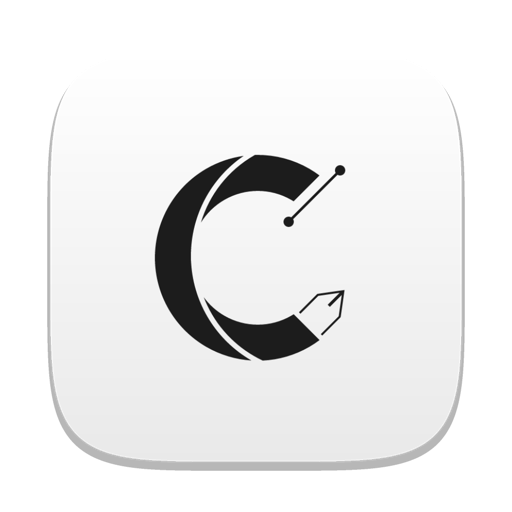

Guía del usuario
Diseña, prepara y corta con tu Silhouette CAMEO desde una aplicación nativa para Mac. Esta guía recorre todo el programa: desde tu primer diseño hasta el envío a la máquina, con los ajustes de cada material.
Capítulo 1
OpenCraftCutter es una aplicación para diseñar y cortar con las cortadoras Silhouette CAMEO. Funciona como una aplicación nativa de Mac, abre tus archivos de Silhouette Studio y habla directamente con la máquina por Bluetooth.
OpenCraftCutter-0.2.1.dmg y arrastra OpenCraftCutter a la carpeta Aplicaciones.Requisitos. macOS 11 o posterior en un Mac con Apple Silicon (M1 o posterior). Para cortar se necesita una CAMEO con Bluetooth; la conexión está comprobada con la CAMEO 5.
En la esquina superior derecha hay tres pestañas grandes. Cada una cambia toda la ventana a un modo de trabajo:
| Espacio | Para qué sirve |
|---|---|
| DISEÑO ⌥⌘D | El lienzo con el tapete, las herramientas de dibujo y todos los paneles de edición. Aquí pasarás la mayor parte del tiempo. |
| BIBLIOTECA ⌥⌘L | Tus diseños guardados, con carpetas, búsqueda y vistas previas. Abre o inserta un diseño con un clic. |
| ENVIAR | Todo lo necesario para cortar: conexión, material, acción, herramienta y el botón ENVIAR. |
| 1 · Espacios | Diseño, Biblioteca y Enviar. Debajo, a la izquierda, la barra de menús: Archivo, Editar, Objeto, Ver, Zoom y Rotar página, y botones rápidos (nuevo, abrir, guardar, deshacer, zoom…). |
| 2 · Barra de estilo | Cambia según la selección y la herramienta: colores de relleno y trazo, grosor, tamaño y posición, fuente del texto o las acciones de Editar puntos. |
| 3 · Pestañas | Cada documento abierto tiene su pestaña. ⌘W cierra la activa. |
| 4 · Herramientas | Seleccionar, Editar puntos, Línea, Rectángulo, Elipse, Polígono, Mano alzada, Texto, Borrador, Cuchilla, Desplazar y Zoom. |
| 5 · Lienzo | El tapete gris con la página blanca. La línea roja marca el área que la máquina puede cortar. |
| 6 · Panel | El panel abierto (aquí, Configuración de página). Se cierra con su ×. |
| 7 · Raíl de paneles | Iconos para abrir cada panel: Página, Transformar, Relleno, Trazo, Texto, Capas, Modificar, Desplazamiento, Trazar, Replicar… |
| 8 · Barra de estado | Posición del cursor y, si hay selección, cuántos objetos y su tamaño. También muestra avisos breves. |
Capítulo 2
En diez minutos harás una etiqueta con un nombre dentro de un marco redondeado, la probarás en la máquina y la cortarás. Por el camino conocerás las piezas básicas del programa.
.opencraftcutter. Si lo guardas dentro de la carpeta de la biblioteca, aparecerá en BIBLIOTECA.Antes del primer corte real haz siempre la prueba sobre un trozo de material de descarte. Una profundidad o presión excesivas pueden marcar el tapete o desgastar la cuchilla.
Capítulo 3
Define en qué máquina vas a cortar, sobre qué tapete y de qué tamaño es el material. Todo lo que dibujas se coloca sobre esa página.
| Ajuste | Qué hace |
|---|---|
| Máquina | Modelo de cortadora: CAMEO 5, 5 Plus, Pro Mark 2, CAMEO 4, Plus, Pro, Portrait 3 y 4, CURIO 2 y modelos heredados. Determina el ancho máximo de corte y los tapetes disponibles. Auto usa la CAMEO 5. |
| Tipo de alimentación | Cómo entra el material: con tapete o en rollo. |
| Tapete de corte | El tapete físico. Auto elige el de la máquina: 12 × 12 in en la CAMEO 5, 15 × 15 in en los modelos Plus y 24 × 24 in en los Pro. Ninguna es para materiales con soporte propio (vinilo, transferencia térmica). |
| Tamaño de medios | Tamaño del material: Carta, A4, A5, A6, 5×7, 12×12… o A medida con ancho y alto propios. Los modelos Pro añaden 24×24, 12×24 y A3. |
| Restringir los medios a la alfombrilla de corte | Impide que la página sea mayor que el área de corte del tapete. |
| Vertical / Apaisado | Intercambia ancho y alto de la página. |
| Transparencia y color | Color de la página y su transparencia, útil para ver cómo quedará sobre un material de color. |
| Rotar previsualización | Gira la vista de la página 90°, 180° o 270° sin cambiar el diseño. |
En la segunda pestaña del panel, o en el menú Ver:
Las unidades (cm, mm o pulgadas), el espaciado de retícula y el margen de corte por defecto de los documentos nuevos se cambian en Preferencias.
Capítulo 4
Las herramientas están en la columna izquierda. Cada una tiene una tecla: pulsa la letra en cualquier momento (sin estar escribiendo texto) para cambiar de herramienta.
| Herramienta | Cómo se usa |
|---|---|
| Seleccionar V | Clic para seleccionar; ⇧+clic para añadir o quitar; arrastra en vacío para seleccionar con un rectángulo. Doble clic sobre una forma entra en Editar puntos; sobre un texto, lo edita. |
| Editar puntos A | Mueve nodos y manejadores de curva. Ver Editar puntos. |
| Línea L | Arrastra de un extremo a otro. |
| Rectángulo R | Arrastra en diagonal. Con ⇧, cuadrado. |
| Elipse E | Arrastra en diagonal. Con ⇧, círculo. |
| Polígono G | Un clic por vértice; doble clic cierra la forma. |
| Mano alzada P | Dibuja arrastrando, como con un lápiz. |
| Texto T | Clic en el lienzo y escribe. Ver Texto. |
| Borrador | Arrastra sobre las formas para borrar esa franja. El grosor se ajusta en Preferencias. |
| Cuchilla | Arrastra una línea a través de una forma para partirla en dos. |
| Desplazar H | Arrastra para mover la vista. También puedes mantener Espacio con cualquier herramienta. |
| Zoom de arrastre Z | Arrastra un rectángulo para acercarte a esa zona; clic acerca, ⌥+clic aleja. |
Trackpad: desliza con dos dedos para desplazarte y pellizca para hacer zoom.
Ratón: la rueda desplaza; ⌘+rueda hace zoom alrededor del cursor.
⌘+ / ⌘− acercan y alejan; ⌘0 ajusta la página a la ventana.
⌘2 hace zoom a la selección; ⌘1 también ajusta a la página.
Capítulo 5
Toda forma está hecha de nodos unidos por tramos rectos o curvos. Editar puntos te deja moverlos, añadir o quitar nodos y cambiar el tipo de cada tramo.
Entra con A o con doble clic sobre una forma. Los nodos aparecen como cuadraditos; al seleccionar uno, sus manejadores de curva aparecen como puntos unidos por una línea.
Están en el panel Editar puntos y también en la barra superior mientras usas la herramienta.
| Acción | Qué hace |
|---|---|
| Borrar punto | Quita el nodo seleccionado; los tramos vecinos se unen. |
| Romper trazado | Abre la forma en el nodo seleccionado. Un trazado cerrado queda abierto ahí; uno abierto se parte en dos. |
| Unir trazados | Con un extremo de un trazado abierto seleccionado, lo une con el extremo libre más cercano de la misma forma. Los dos extremos se funden en un único nodo en su punto medio. Si el extremo más cercano es el otro extremo del mismo trazado, la forma se cierra. Deshace exactamente un «Romper trazado». |
| Vértice | Nodo en esquina: sus dos manejadores se mueven por separado. |
| Suavizar | Nodo suave: manejadores alineados para una curva continua. |
| Convertir en recta / en curva | Cambia el tramo resaltado entre recto y curvo. |
| Simplificar ⌘J | Reduce el número de nodos manteniendo la forma. Muy útil tras trazar una imagen. |
| Convertir en trazado | Convierte rectángulos, elipses y textos en trazados editables nodo a nodo. |
La sección Recuento de nodos muestra cuántas formas, contornos y nodos (lineales y de Bézier) tiene la selección.
Capítulo 6
OpenCraftCutter usa las fuentes instaladas en tu Mac. Los textos siguen siendo editables hasta que los conviertes en trazado.
Letras que se tocan. En fuentes manuscritas las letras se solapan; si las cortas así, cada letra se corta por separado y el corte atraviesa las uniones. Selecciona el texto y pulsa Fusionar ⇧⌘W: las letras se unen en un solo contorno. Las operaciones de Modificar convierten el texto en trazado automáticamente.
Capítulo 7
El color de relleno es para ver e imprimir; el color de la línea puede servir además para decidir cómo se corta cada forma (ver Cortar por color de línea).
Sin nada seleccionado, el color que elijas se usará en las formas nuevas que dibujes.
Capítulo 8
| Submenú | Opciones |
|---|---|
| Espejo | Voltear horizontalmente o verticalmente. |
| Organizar | Traer al frente ⇧⌘], Enviar detrás ⇧⌘[, Hacia delante ⌘], Hacia atrás ⌘[. |
| Alinear | Izquierda, centro, derecha, arriba, centro vertical, abajo, centro hor+vert; distribuir horizontal o verticalmente; centrar en página. Con un solo objeto se alinea con el área de corte. |
| Rotar | Girar 45°, 90° o 180° en cualquier sentido, o fijar el ángulo a 0°, 90°, 180° o 270°. |
| Replicar | Atajos de Replicar: duplicar o reflejar hacia un lado, copias rotadas, filas, columnas y Llenar página ⇧⌘F. |
| Modificar | Operaciones de Modificar, Agrupar ⌘G, Desagrupar ⇧⌘G, Crear trazado compuesto ⌘E, Soltar trazado compuesto ⇧⌘E, Convertir en trazado y Simplificar ⌘J. |
Cinco pestañas para trabajar con números exactos:
Un grupo se selecciona y mueve como un solo objeto. Los grupos pueden contener otros grupos: Desagrupar quita solo el nivel exterior.
Lista todos los objetos del documento, del frontal al del fondo. En cada fila puedes ocultar o mostrar el objeto (el ojo), bloquearlo para que no se mueva ni se borre (el candado) y cambiar su orden.
Capítulo 9
Selecciona dos o más formas cerradas y abre el panel Modificar (o el menú Objeto → Modificar).
| Operación | Resultado |
|---|---|
| Fusionar ⇧⌘W | Une las formas en una sola. También funciona con un solo texto: en fuentes manuscritas une las letras que se tocan en un único contorno, para que se corte como una pieza. |
| Interseccionar | Conserva solo la zona común a todas. |
| Sustraer | Resta la forma de delante de cada una de las de detrás. |
| Sustraer todo | Resta todas las formas de delante de la de más atrás. |
| Recortar | Recorta las formas de detrás a la silueta de la de delante. |
| Dividir | Corta las formas en todas sus piezas. |
| Separar trazos | Separa las islas en formas; cada una conserva sus agujeros. |
| Crear trazado compuesto | Une las formas en un trazado compuesto: los solapes se vuelven agujeros. |
| Soltar trazado compuesto | Convierte cada trazo del compuesto en una forma (los agujeros también). |
Crea un contorno exterior o interior a una Distancia dada, con esquinas en Vértice o Redondeado y un Límite de esquina. Es la forma habitual de hacer el borde blanco de una pegatina: desplazamiento de 2–3 mm alrededor del diseño.
Capítulo 10
Importa fotos y dibujos (PNG, JPG…) con Archivo → Importar imagen… ⇧⌘M o arrastrándolos desde el Finder al lienzo. Una imagen no se corta: para cortarla hay que trazarla.
Las imágenes PNG con fondo transparente se trazan mejor con el contorno externo: el borde sigue exactamente la transparencia, incluidos cabellos y detalles finos.
Con un tapete PixScan puedes cortar alrededor de un dibujo o una pieza que ya tienes en papel:
Para pegatinas impresas: OpenCraftCutter imprime el diseño con unas marcas de registro que la CAMEO lee con su sensor para cortar exactamente alrededor de lo impreso.
Con las marcas activas, Enviar avisa si alguna línea queda fuera del marco entre las marcas (no se cortaría) o sobre las zonas rayadas de las marcas (puede estorbar la lectura). Para pegatinas, la Hoja de pegatinas lo prepara todo en un paso.
No muevas ni escales el diseño después de imprimir: las marcas de registro y el corte deben coincidir con lo impreso. Las marcas de estilo Invertido todavía no se pueden leer: usa el estilo Por defecto.
Capítulo 11
Rellena una forma con círculos del tamaño de la piedra para cortar una plantilla de strass. Elige el tamaño (SS6 de 2,0 mm a SS20 de 4,7 mm, o un diámetro propio), la Separación y la disposición: Contorno, Relleno o Ambos. Pulsa Generar pedrería.
Genera un sombreado de líneas dentro de la forma para dibujarlo con rotuladores: Ángulo, Separación y Cruzado (dos direcciones). Puedes conservar la forma original.
| Herramienta | Qué prepara |
|---|---|
| Puntuar y grabar en relieve | Muescas y líneas de gofrado: la cuchilla (portaherramientas 1) marca el contorno y la herramienta de relieve (portaherramientas 2) presiona por dentro. En alto o en bajo relieve. |
| Lápiz térmico | Rellenos para foil activado por calor, con punta fina de 1 mm o ancha de 3 mm. |
| Grabador eléctrico | Rellenos para grabar patrones en materiales sólidos, como la madera. |
| Punzón de cuero | Coloca puntos de perforación con un clic en el lienzo; Esc termina. |
| Tallador de cuero | Patrones de estampado para cuero fino y sintético. |
En desarrollo Los paneles Deformar y Relieve y la herramienta Nota todavía no están terminados.
Capítulo 12
| Formato | Abrir / importar | Guardar / exportar |
|---|---|---|
.opencraftcutter | Sí: el formato propio, guarda todo. | Sí: ⌘S, ⇧⌘S. |
.studio3 | Sí: abrir o arrastrar. | Sí: Exportar como .studio3… |
.svg | Sí: ⇧⌘I. | Sí: ⌥⌘E. |
| PNG, JPG… | Sí, como imagen: ⇧⌘M. | — |
| — | Al imprimir (⌘P) se genera un PDF. |
OpenCraftCutter abre los documentos de Silhouette Studio y también puede crearlos, para que pases tus diseños de un programa a otro.
Formas y curvas, trazados compuestos, rotación, colores de línea y relleno con su transparencia, imágenes incrustadas recortadas a su contorno, textos editables, grupos (también grupos dentro de grupos), tamaño de los medios y marcas de registro.
Para que un texto exportado se vea igual al editarlo en Silhouette Studio, el otro ordenador debe tener instalada la misma fuente.
Cada 2 minutos, si hay cambios sin guardar, OpenCraftCutter guarda una copia de seguridad del documento en ~/Library/Application Support/OpenCraftCutter. Si el programa se cierra inesperadamente, usa Archivo → Abre un archivo recuperado….
El historial de Deshacer ⌘Z / Rehacer ⇧⌘Z cubre todos los cambios del documento.
Capítulo 13
La biblioteca es una carpeta de tu Mac (por defecto ~/Documents/OpenCraftCutter) vista como un catálogo con miniaturas. Lo que guardes ahí aparece aquí, y viceversa.
Muestra .opencraftcutter, .studio3, SVG e imágenes, con vista previa de cada uno. Puedes elegir otra carpeta como biblioteca en Preferencias.
Capítulo 14
El espacio Enviar convierte tu diseño en un trabajo de corte: decide qué líneas se cortan, con qué herramienta y con qué ajustes, y lo manda a la máquina.
La tarjeta indica en todo momento el estado: sin conexión, buscando, conectada y lista, sin material cargado o en movimiento. También detecta la herramienta montada en cada portaherramientas y la marca en verde «(detectada)» en el selector de herramienta.
| Modo | Cuándo usarlo |
|---|---|
| Guía | Asistente paso a paso: conectarse, elegir material, acción y herramienta, ajustar la cuchilla, colocar el material, cargar el tapete o rollo, resumen y ¡hazlo! Ideal al empezar. |
| Estándar | Un material y una acción por portaherramientas. Con los botones bajo la vista previa decides si cada objeto va al portaherramientas 1 o al 2, si se cortan todas sus líneas o solo el contorno exterior, o si se omite. |
| Cortar por color de línea | Cada color de línea del diseño tiene sus propios ajustes: por ejemplo, rojo = cortar, azul = marcar un pliegue, negro = dibujar con rotulador. |
| Cortar por color de relleno | Igual, pero agrupando por color de relleno. |
En los modos por color, haz clic en un color para ver sus ajustes; con clic derecho tienes On/Off, Activar/Desactivar todo, Fusionar con el color seleccionado, Unir todo, Herramienta 2 todo y Pausa al terminar este color (la máquina se detiene para que cambies de herramienta o de material).
OpenCraftCutter incluye 81 materiales con ajustes de corte recomendados para la CAMEO 5: cartulinas, papeles, vinilos, transferencias térmicas, pegatinas, telas, adhesivos, cueros, madera de balsa, goma eva y más. El selector tiene categorías (A medida, Pegatina, Transferencia térmica, Vinilo, Tarjeta, Papel, Tela, Adhesivo y Otro) y una búsqueda que encuentra en todas las categorías a la vez.
| Ajuste | Qué controla |
|---|---|
| Presión (1–33) | Fuerza con que la herramienta apoya en el material. Más grueso o duro, más presión. |
| Velocidad (1–30) | Rapidez del movimiento. Baja la velocidad en materiales gruesos o diseños con mucho detalle. |
| Pasadas (1–10) | Cuántas veces se repite el corte. Útil en materiales gruesos. |
| Profundidad | Cuánto asoma la cuchilla: niveles 1–10 en la cuchilla automática (la máquina la ajusta sola) y 1–20 en la cuchilla Kraft. En cuchillas manuales, OpenCraftCutter te indica a qué número girar el anillo. |
| Sobrecorte de segmento de línea | Prolonga cada tramo recto en las esquinas para que queden limpias. Activado de serie en madera prensada, papel corrugado, goma eva y papel de portada. |
| Optimización de ruta | Ordena los trazos para recorrer menos distancia sin cortar. |
Si cambias un ajuste, pulsa Guardar para conservarlo en el material, Deshacer para volver al valor anterior, o Guardar como… para crear tu propio material. Los materiales propios aparecen en la categoría A medida; Añadir nuevo tipo de material… crea uno desde cero. Restaurar materiales predeterminados (en el menú del engranaje) recupera los valores originales sin tocar los tuyos.
Cortar, Esbozar (dibujar con rotulador), Punteado, Marcar (pliegue), Corte desplegable, Encuadernar, Corte Kraft, Corte giratorio, Perforar y Relieve. Auto usa la acción del material para la herramienta montada.
Cuchilla automática, de trinquete, de corte profundo, Kraft (2 mm), rotatoria y de perforado; rotulador de esbozo y adaptador de bolígrafo; herramientas de relieve y grabado; lápiz térmico; punzón y tallador de cuero.
El portaherramientas 1 admite las cuchillas finas (como la automática); el 2, además, las herramientas gruesas (Kraft, rotatoria, relieve…). OpenCraftCutter solo te ofrece las combinaciones válidas.
Generar forma de prueba añade un cuadrado de 10 mm con un triángulo dentro; Enviar prueba corta solo esa forma con los ajustes actuales.
| Resultado | Qué ajustar |
|---|---|
| El triángulo no se desprende | Sube una o dos unidades de presión, o un nivel de profundidad. |
| Se desprende pero el soporte queda cortado o marcado | Baja la presión o la profundidad. |
| Bordes rasgados o esquinas levantadas | Baja la velocidad y activa el sobrecorte; comprueba que la cuchilla no esté gastada. |
| El material se mueve | Usa un tapete más adherente y alísalo bien; activa Ordenar por contornos interiores. |
Cuando quede bien, borra la forma con Eliminar forma de prueba antes de enviar el diseño.
Encima de ENVIAR aparecen avisos en amarillo. No impiden enviar, pero conviene leerlos:
| Aviso | Qué hacer |
|---|---|
| Detalles más finos que el mínimo del material | Las zonas se marcan en rojo en la vista previa: se romperían al cortar o al pelar. Mínimos: 0,8 mm papel y cartulina, 1 mm vinil, 1,2 mm vinil textil, 2 mm tela. Engrosa esas partes (Desplazamiento) o agranda el texto. |
| Líneas fuera de las marcas de registro | Mueve el diseño dentro del marco y fuera de las zonas rayadas. |
| La cuchilla lleva muchos metros | Ver Historial y cuchillas. |
Vinil textil: con un material de transferencia de calor, Reflejar el diseño al cortar se activa solo y la vista previa ya sale en espejo (el vinil textil se corta por el revés). Si lo desmarcas, un aviso te recuerda que quedará al revés en la prenda. Los imprimibles no se reflejan, ni la forma de prueba.
Junto a Trabajos aparece el tiempo estimado del corte (aproximado). Simular corte anima la cuchilla sobre la vista previa en el orden real de envío: lo cortado en negro, los desplazamientos en vacío en gris. Cambia la velocidad con ×1, ×5 o ×20 y termina con Parar.
Al pulsar ENVIAR, OpenCraftCutter comprueba que la máquina esté lista y con el material cargado, y envía el trabajo. La barra de progreso muestra el avance. Si añadiste pausas, la máquina se detiene y aparece Continuar; Cancelar detiene el trabajo en cualquier momento.
Mantén las manos lejos del carro mientras la máquina se mueve, y no descargues el tapete hasta que termine.
Historial de cortes y cuchillas (bajo la lista de trabajos) guarda cada envío con su fecha, documento, ajustes, metros y resultado (terminado, cancelado o error), y los metros que lleva cada cuchilla desde que la cambiaste. Al cambiar una cuchilla, pulsa La he cambiado. En Avisar a los eliges a cuántos metros te recuerda revisarla (100 m de serie: es orientativo, depende mucho del material).
Capítulo 15
Herramientas para preparar pegatinas y vinil en pocos pasos, y para diseños especiales: texto curvo, fuentes de rotulador, plantillas, códigos QR y diseños más grandes que el tapete.
En el panel Imprimir y cortar, sección Hoja de pegatinas:
Objeto → Alinear → Acomodar en la página reparte las piezas seleccionadas por filas, sin solaparse y a 3 mm entre ellas, para gastar menos material. Cada grupo cuenta como una pieza. Si alguna no cabe, se queda donde estaba y te avisa.
El panel Desbarbado añade una caja alrededor del diseño y líneas por los huecos entre piezas (nunca por encima de una), para pelar el vinil sobrante a trozos sin arrastrar las letras pequeñas.
En el panel Desbarbado, Añadir marcas de alineación pone dos cruces a los lados del diseño, iguales en cada color. Corta cada color con sus cruces y, al aplicar el vinil, haz coincidir las cruces de una capa con las de la otra. Quitar desbarbado y marcas borra lo añadido.
El texto pasa a ser un trazado: corrige el texto antes de colocarlo. ⌘Z lo devuelve editable.
La primera fuente de la lista, Hershey Sans (un trazo), dibuja cada letra con una sola línea en vez de su contorno: es la fuente para el rotulador (acción Esbozar). Incluye ñ, tildes, ¿ y ¡.
Objeto → Insertar plantilla… crea a la medida que pongas una Caja abierta (con pestañas para pegar), un Sobre (das el tamaño de la tarjeta), una Tarjeta doblada o una Etiqueta con agujero. El corte va en rojo y los dobleces en azul discontinuo.
En Enviar → Cortar por color de línea, pon la fila azul en Marcar o con poca profundidad: así dobla sin cortarse.
Objeto → Insertar código QR…: escribe el texto o enlace, elige el tamaño y pulsa Insertar. Se coloca centrado en la página como una sola forma. Para cortarlo en vinil, mejor de 25 mm o más.
En el panel Configuración de página, sección Diseños grandes:
Las imágenes no se dividen. ⌘Z devuelve el diseño entero.
Capítulo 16
Editar → Preferencias… ⌘K. Los cambios se guardan automáticamente y se aplican a los documentos nuevos.
| Ajuste | Qué hace |
|---|---|
| Unidades | Centímetros, milímetros o pulgadas en toda la interfaz. |
| Máquina | Máquina por defecto de los documentos nuevos. |
| Mostrar rejilla y Espaciado de rejilla | Retícula por defecto. |
| Margen de corte | Distancia entre el borde del material y el área de corte. |
| Grosor del borrador | Ancho de la herramienta Borrador. |
| Biblioteca | Elegir carpeta… para usar otra carpeta como biblioteca. |
Capítulo 17
| ⌘N | Nuevo |
| ⇧⌘N | Nuevo asistente de proyecto |
| ⌘O | Abrir |
| ⇧⌘O | Combinar |
| ⌘S · ⇧⌘S | Guardar · Guardar como |
| ⌃⌥⌘R | Guardar en la biblioteca |
| ⇧⌘I | Importar SVG |
| ⇧⌘M | Importar imagen |
| ⌥⌘E | Exportar como SVG |
| ⌘P | Imprimir |
| ⌘W | Cerrar pestaña |
| ⌘Z · ⇧⌘Z | Deshacer · Rehacer |
| ⌘X ⌘C ⌘V | Cortar, copiar, pegar |
| ⌘F | Pegar delante |
| ⌘D | Duplicar |
| ⌫ | Borrar |
| ⌘A · ⇧⌘A | Seleccionar · deseleccionar todo |
| ←→↑↓ | Mover 1 mm (10 mm con ⇧) |
| ⌘K | Preferencias |
| ⌘G · ⇧⌘G | Agrupar · Desagrupar |
| ⌘E · ⇧⌘E | Crear · soltar trazado compuesto |
| ⇧⌘W | Fusionar |
| ⌘J | Simplificar |
| ⇧⌘F | Llenar página |
| ⇧⌘] · ⇧⌘[ | Traer al frente · enviar detrás |
| ⌘] · ⌘[ | Hacia delante · hacia atrás |
| ⌘+ · ⌘− | Acercar · alejar |
| ⌘0 · ⌘1 | Ajustar a la página |
| ⌘2 | Zoom a la selección |
| ⌥⌘D · ⌥⌘L | Espacio Diseño · Biblioteca |
| ⇧⌘L | Mostrar bordes de corte |
| ⇧⌘P | Mostrar bordes de impresión |
| Espacio | Desplazar mientras se mantiene |
| V · A | Seleccionar · Editar puntos |
| L · R · E | Línea · Rectángulo · Elipse |
| G · P · T | Polígono · Mano alzada · Texto |
| H · Z | Desplazar · Zoom de arrastre |
| Esc | Terminar o cancelar la acción en curso |
Capítulo 18
Carga el tapete o el rollo con el botón de carga de la máquina antes de pulsar ENVIAR.
Haz un corte de prueba y ajusta presión y profundidad de una en una. Revisa que el material elegido coincida con el que tienes y que la cuchilla no esté gastada.
Falta la fuente en ese ordenador. Instálala allí o convierte el texto en trazado antes de compartir el archivo.
Ábrela con clic derecho → Abrir la primera vez (ver Instalar OpenCraftCutter).
Mira en Archivo → Abre un archivo recuperado… (ver Copia automática).
Capítulo 19
| Área de corte | Zona que la máquina puede alcanzar, marcada con una línea roja en el lienzo. |
| Desplazamiento | Contorno paralelo a una forma, por fuera o por dentro. |
| Fusionar | Unir formas que se solapan en una sola silueta. |
| Manejador | Punto de control que define la curvatura del tramo junto a un nodo. |
| Marcas de registro | Marcas impresas que la máquina lee para alinear el corte con lo impreso. |
| Medios | El material que se corta (papel, vinilo…) y su tamaño. |
| Nodo | Punto de una forma donde empieza y acaba un tramo. |
| Portaherramientas | Cada uno de los dos carros de la CAMEO donde se monta una herramienta. |
| Sobrecorte | Prolongación del corte en las esquinas para que queden limpias. |
| Tapete | La base adhesiva que sujeta el material mientras se corta. |
| Trazado compuesto | Una forma hecha de varios contornos, donde los interiores son agujeros (como la letra «O»). |
| Trazar | Convertir una imagen en líneas de corte. |
OpenCraftCutter es un proyecto independiente y no está afiliado a Silhouette America. Silhouette, CAMEO, Portrait, CURIO, PixScan y Silhouette Studio son marcas de sus respectivos propietarios.